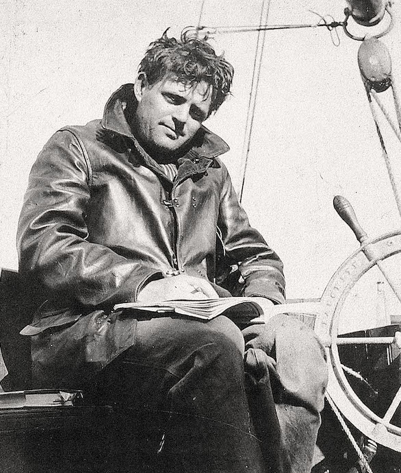

Şive'nin Notları
Gezi, sinema ve edebiyat üzerine kısa notlar.
Tayland Gezi Rehberi: İlk Kez Gidenlere
Bangkok’un tapınakları, Phuket’in plajları ve Chiang Mai’in sakinliği…
Kısa bir planla bile çok şey görebilirsin. Aşağıdaki ipuçları başlangıç için ideal.

- Ulaşım: Airport Rail Link + BTS ile trafikten kaç.
- Yemek: Sokak lezzetlerinde pad thai ve mango sticky rice dene.
- Rota: Bangkok (2g) → Ayutthaya (1g) → Chiang Mai (3g) → Phuket (2g).
Daha fazla bilgi için
Tourism Thailand ve
Wikivoyage sayfalarına göz at.
2025’in En İyi Bilim Kurgu Filmleri: Kısa Liste
Bilim kurgu, insan doğasını teknoloji, uzay ve yapay zekâ temalarıyla sorgulayan güçlü bir türdür.
Aşağıda hem klasikleşmiş hem de modern dönemde öne çıkan birkaç film yer alıyor.
- 2001: A Space Odyssey
- They Live
- Her
- Ex Machina
- Back to the Future
- The Matrix
Festival takvimleri için
IMDb ve
Rotten Tomatoes
listelerini takip edebilirsin.
Jack London Kitaplarına Başlarken
Doğa, hayatta kalma ve insan-doğa çatışması… Jack London’ın eserleri kısa ama yoğun anlatımıyla
okuru hızlıca içine çeker. İşte yeni başlayanlar için üçlü başlangıç.

- Vahşetin Çağrısı: Kuzeyin sertliği ve içgüdü teması.
- Beyaz Diş: Uyum, evcilleşme ve sadakat.
- Martin Eden: Sınıf, yazarlık serüveni ve bireycilik.
Telif süresi geçmiş birçok eseri
Project Gutenberg’den
okuyabilir, biyografi için
Wikipedia’ya bakabilirsin.